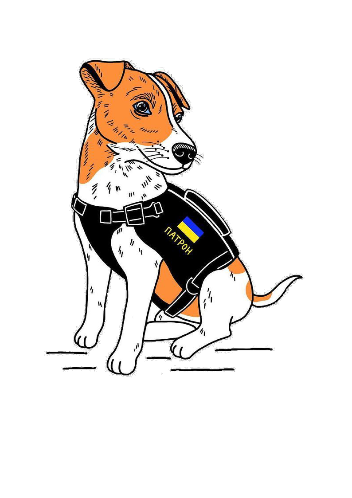

Є кілька гіпотез походження собаки, найімовірнішими її предками вважаються вовк та деякі види шакалів. У судженнях вчених про предків домашнього собаки є дві точки зору. Одні вважають, що собаки - поліфілетична група (походить від декількох предків), інші дотримуються думки, що всі собаки походять від одного предка (монофілетична теорія) [9] [неавторитетне джерело?]. Етолог Конрад Лоренц, лауреат Нобелівської премії, висунув у свій час теорію про походження собак від вовків і від шакалів [10], підкреслюючи діаметральні відмінності між їхніми характерами та звичками. На походження собаки від вовка вказують комплексні результати порівняльного аналізу хромосом, поведінки, морфології, вокалізації та результати молекулярно-генетичного аналізу

Про собак